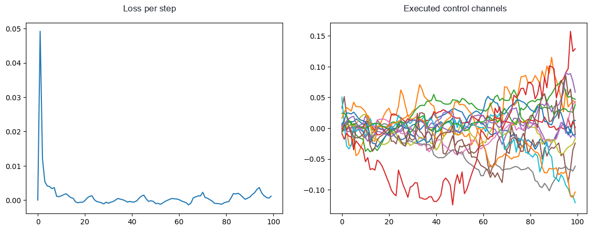

Language-oriented
Robot Morphology Co-Design
Dat Nguyen · Harvard SEAS & Basis Research Institute
Joint work with the R-ADA team at Basis
Text2Robot (Duke, 2024): task in, body and gait out
Roadmap
Where we are going, in five parts
01
The robot co-design problem
02
How do we currently co-design robots?
03
RoboTL: describing morphology and control
04
Modeling LLM Inference as function call
05
Preliminary results and future work
01
The robot co-design problem
02
How do we currently co-design robots?
03
RoboTL: describing morphology and control
04
Modeling LLM Inference as function call
05
Preliminary results and future work
The co-design problem
Given a task: design a better morphology, and control that morphology to finish the task.
Heess et al., Emergence of Locomotion Behaviours in Rich Environments (2017)
Cheney et al., Evolving Soft Robots with Multiple Materials (2013)
01
The robot co-design problem
02
How do we currently co-design robots?
03
RoboTL: describing morphology and control
04
Modeling LLM Inference as function call
05
Preliminary results and future work
2.1 Bi-level optimization
Optimize control in the inner loop, morphology in the outer loop
Outer loop · morphology
propose a body ↓
Inner loop · control
train a controller for this body, from scratch
score the pair ↓ step the body, repeat
cost = bodies explored × one full controller training each. Three decades after Sims, the shape is the same: massively parallel RL still needs about twenty minutes per controller for uneven-terrain locomotion on a workstation GPU (Rudin et al. 2021), and none of it is reused for the next body.
Evolutionary co-design (Sims 1994, Text2Robot 2024) is the population form of the same nested loop.
In this paper: population 300 × 100 generations, about three hours on a 32-processor Connection Machine CM-5.
Karl Sims, Evolved Virtual Creatures (1994)
Captures: the true coupling of body and controller; principled scoring of a design.
Misses: cost. One outer-loop step pays a full inner-loop training run: twenty minutes to hours of GPU time per body, so a few hundred candidates already cost days to weeks. That does not scale to LLM-speed iteration.
2.2 Learned graph surrogates
A grammar over robot graphs plus a GNN that predicts performance
RoboGrammar and friends make the design space compact and search-friendly: a grammar generates robot graphs, and a learned model scores them without running a full simulation each time.
Zhao et al., RoboGrammar (SIGGRAPH Asia 2020)
Captures: a compact, searchable design space; fast approximate evaluation.
Misses: grounding. The graph has no real geometry, joint limits, or ports, and the surrogate needs training data we do not have in new domains.
2.3 LLM-driven morphology design
Design, not co-design: the controller never enters the loop
Lang2Morph (Qiao, Gilday, Xie, Hughes 2025,
arXiv:2509.18937): a natural-language task, an LLM choosing semantic tags over a structural grammar of the Open Parametric Hand, and about five LLM refinement iterations to a 3D-printable, task-specific hand.

Figure: Qiao et al., Lang2Morph (arXiv:2509.18937)
Nearby LLM-era efforts: VLMgineer (robot tools), A Design Co-Pilot (task-tailored manipulators), Text2Touch (LLM-designed rewards), House of Dextra (cross-embodied dexterous-hand co-design).
Captures: cheap iteration; natural-language task input; manufacturable output.
Misses: co-design itself. The controller is frozen, and the task often needs morphology and control to move together.
2.4 Differentiable simulation and foundation controllers
Gradients make the control loop cheap; the body still comes from outside
In ELDiR, differentiable simulation learns each candidate body's controller by gradient descent; the bodies themselves still evolve in a non-differentiable outer loop. Morphological pretraining goes further: one universal controller, pretrained across millions of bodies. Foundation controllers (universal policies, diffusion policies, VLAs) push the same idea at scale.
ELDiR: Evolution and learning in differentiable robots
Captures: fast gradient-based control per body; controllers that transfer across bodies.
Misses: structural change. Gradients can nudge what already exists, small, continuous, local adjustments; adding, removing, or rewiring parts is non-differentiable and still comes from outer-loop search. In ELDiR the gradients touch only the controller weights.
Each approach picks one side of the coupling, or pays full price for both. Co-design at LLM speed needs a different substrate.
How we approach co-design
Two components, the next two parts of this talk
01 · The representation
A programming language expressive enough to describe abstract components and realistic, manufacturable robots, uncertainty over the designs, and the control objective, all in one program.
One program can be rendered to CAD, compiled to MuJoCo, constraint-solved in JAX, and controlled by MPC. A palm can declare a prior over where its fingers attach; declare a loss and the controller comes for free.
02 · The LLM framework
An LLM framework that takes full advantage of that representation: generation as an effect, so proposing a design is writing a program.
An LLM call is a typed function call: returns are parsed and validated, tools and sub-templates are captured from lexical scope, and a template can even return a function. Handlers add retries, providers, and checks without touching the program.
01
The robot co-design problem
02
How do we currently co-design robots?
03
RoboTL: describing morphology and control
04
Modeling LLM Inference as function call
05
Preliminary results and future work
Why do we need a new representation?
CAD (URDF, OpenSCAD, …)

cube([10,10,60]);
translate([0,0,60])
rotate([0,90,0])
cylinder(d=8, h=12);
// ...200 more lines
- Manufacturable, pixel-precise.
- No joints, sensors, control.
- Vary anything → rewrite the file.
RoboGrammar (and friends)

Robot -> Body Arm Arm
Arm -> Link Joint Arm
Joint -> Hinge | Slide
Link -> short | long
# graph + GNN eval
- Compact, search-friendly.
- No grounded geometry / joint limits / ports.
- Eval needs a learned model or sim sweep.
RoboTL (this work)
@defcomponent
def OpenParametricHand(self,
params: HandParams | None = None,
n_fingers=4, n_thumbs=1,
unit_scale=0.001):
p = params or HandParams.default()
self.palm = Palm(p, n_fingers, n_thumbs, unit_scale)
self.fingers = [Digit(p.fingers[i], ...)
for i in range(n_fingers)]
# ... thumbs, tendons, actuators ...
- Grounded geometry and joints/sensors/losses.
- Compose by ports, parametric variation.
- CAD, JAX, MuJoCo as handlers.
Anatomy of a RoboTL component
import effectful.handlers.jax.numpy as jnp
from robotl.examples.hinge import HingeJoint
from robotl.examples.simple_cad import Cylinder
from robotl.handlers.mujoco import view_model
from robotl.ops import joints
from robotl.ops.syntax import Port, Pose, defcomponent
@defcomponent
def Arm(self, link1L=0.120, link2L=0.1, linkDia=0.025):
"""Two-link arm with revolute joints."""
self.link1 = Cylinder(d=linkDia, h=link1L)
self.link2 = Cylinder(d=linkDia, h=link2L)
self.shoulder = HingeJoint(plateD=0.032)
self.elbow = HingeJoint(plateD=0.032)
self.wristFlange = Cylinder(d=0.032, h=0.005)
# Ports + welds compose the kinematic chain:
self.base = self.place(Port())
self._weld_shoulder = joints.Weld(self.base, self.shoulder.base)
self._weld_link1 = joints.Weld(self.shoulder.tip, self.link1.base)
# rotate elbow frame so its hinge axis points along Y
pose = Pose(rv=jnp.pi / 2 * jnp.array([0, 0, 1]))
self._weld_elbow = joints.Weld(self.link1.tip, self.elbow.base, pose=pose)
self._weld_link2 = joints.Weld(self.elbow.tip, self.link2.base, pose=~pose)
self._weld_wrist = joints.Weld(self.link2.tip, self.wristFlange.base)
self.tip = self.wristFlange.tip # downstream tasks reach with this port
if __name__ == "__main__":
view_model(lambda: Based(Arm())) # mujoco handler

Describing uncertainty, and solving for it
robotl/examples/parameterized_leap_hand.py, the real palm
@defcomponent
def CircularPalm(self, n_fingers=3, ...):
"""Fingers Dirichlet-sampled on the front
semicircle [-pi/2, +pi/2]."""
spread = math.pi
gaps = choose(dist.Dirichlet(jnp.ones(n_fingers + 1)))
finger_angles = -spread/2 + spread * jnp.cumsum(gaps[:-1])
_build_disc_palm(self, finger_angles=finger_angles, ...)
One line makes the design uncertain: choose marks the finger gaps as drawn from a Dirichlet. The prior lives in the program, next to the geometry it governs. Cumulative sums of the gaps become the finger angles.
How we solve for it
solve_init runs the program once,
collecting every
choose and every constraint instead of executing them. Then
NUTS (MCMC) samples gap values that satisfy the constraints; a
non_overlap penalty between adjacent motors pushes the samples toward even spacing. The highest-log-density design is kept.
No choices, no sampler
A deterministic component (TriangularPalm: fingers at exact edge midpoints) skips the machinery entirely; poses propagate through the kinematic graph.
Where the boundary is
We tried a soft pull toward exact edge midpoints; NUTS would not converge tightly enough at realistic weights. The lesson sits in the code:
priors where you are uncertain, exact structure where you are not.
solve_init in action: three palm shapes, same program
Same LeapHand code, three palm choices. solve_init samples (or fixes) finger angles from each palm's prior, threads the constraints through the kinematic graph, and hands off to the MuJoCo compile.
CircularPalm
Dirichlet over finger gaps; NUTS samples angles in [−π/2, π/2].
RectangularPalm
Fingers in a row along the palm's long axis. The original LEAP geometry.
TriangularPalm
Fingers fixed at three edge midpoints. Deterministic; no choose at all.
Each clip: 72-frame turntable rendered via the MuJoCo handler from the same LeapHand factory, only the palm constructor swapped.
Same factory, swap one component: fingertip variants
No changes to the palm prior, no re-solving by hand. solve_init re-runs end-to-end for each tip variant.
What unlocks cheap codesign: MPC + a loss interface
Model predictive control: plan a short horizon with the model, execute, replan
MPC in one line
At every control step, use the model to plan a short trajectory into the future, execute the first piece, and replan. No training: the controller is search, run online.
What the LLM writes
A
morphology: components, joints, ports.
A
loss: per-stage
Equalize,
Reach, sensors.
The rollout, rendered (control_cube_spinning.ipynb)

A real run (control_demo.ipynb): MPC spinning a cube with the LEAP hand, 5 seconds at dt = 0.05. The declared loss collapses within the first steps; on the right, the spline control channels MPC actually executed.
You have a model, you have an objective function: the controller comes for free.
01
The robot co-design problem
02
How do we currently co-design robots?
03
RoboTL: describing morphology and control
04
Modeling LLM Inference as function call
05
Preliminary results and future work
Third time
Now do it once more, with LLM calls as the effect.
RoboTL: ops are choose / constrain / assert_transform; solve_init samples them.
minipyro: ops are sample / param; Tracer / Replay / SVI handle them.
Effectful LLM: ops are Tool / Template; an LiteLLM provider answers.
Same shape, three substrates. The next two slides show what an LLM call becomes when it's an op.
Design goal: an LLM call is just another function call
from effectful.handlers.llm import Template
from effectful.ops.types import NotHandled
@Template.define
def limerick(theme: str) -> str:
"""Write a limerick on the theme of {theme}. Do not use any tools."""
raise NotHandled
@dataclasses.dataclass
class KnockKnockJoke:
whos_there: str
punchline: str
@Template.define
def write_joke(theme: str) -> KnockKnockJoke:
"""Write a knock-knock joke on the theme of {theme}. Do not use any tools."""
raise NotHandled
@Template.define
def rate_joke(joke: KnockKnockJoke) -> bool:
"""Decide if {joke} is funny or not. Do not use any tools."""
raise NotHandled
@pydantic.dataclasses.dataclass
class Rating:
score: int # field_validator: 1 to 5 only
explanation: str # field_validator: must mention the score
@Template.define
def give_rating_for_movie(movie_name: str) -> Rating:
"""Give a rating for {movie_name}. The explanation MUST
include the numeric score. Do not use any tools."""
raise NotHandled
with handler(provider), handler(RetryLLMHandler()):
print(limerick("fish"))
joke = write_joke("lizards")
if rate_joke(joke): print("> The crowd laughs politely.")
rating = give_rating_for_movie("Die Hard")
Higher order: synthesize functions, compose templates
code and output from the same docs notebook
A template can return a function. The LLM writes the code; an eval handler compiles it; the asserts check it.
from collections.abc import Callable
from effectful.handlers.llm.evaluation import (
UnsafeEvalProvider,
)
@Template.define
def count_char(char: str) -> Callable[[str], int]:
"""Write a function which takes a string
and counts the occurrances of '{char}'.
Do not use any tools."""
raise NotHandled
with handler(provider), handler(UnsafeEvalProvider()):
count_a = count_char("a")
assert count_a("banana") == 3
assert count_a("cherry") == 0
print(inspect.getsource(count_a))
def count_a(s: str) -> int:
return s.count('a')
Templates compose. Templates in lexical scope are captured like tools, so one template can call the others.
@Template.define
def story_with_moral(topic: str) -> str:
"""Write a short story about {topic}
and end with a moral lesson."""
raise NotHandled
@Template.define
def story_funny(topic: str) -> str:
"""Write a funny, humorous story
about {topic}."""
raise NotHandled
# orchestrator: sub-templates are captured
# from the lexical scope, like tools
@Template.define
def write_story(topic: str, style: str) -> str:
"""Write a story about {topic} in the
style: {style}. Use story_funny for humor,
story_with_moral for a lesson."""
raise NotHandled
assert story_funny in write_story.tools.values()
Sub-templates available to write_story:
dict_keys([..., 'write_joke', 'rate_joke',
'story_with_moral', 'story_funny'])
A concrete Agent, in the same effectful pattern
Adapted from effectful/handlers/llm/template.py, run live · github.com/BasisResearch/effectful
import dataclasses
from effectful.handlers.llm import Agent, Template, Tool
from effectful.handlers.llm.completions import LiteLLMProvider
from effectful.ops.semantics import handler
from effectful.ops.types import NotHandled
@dataclasses.dataclass
class ChatBot(Agent):
"""Friendly bot named {self.bot_name}."""
bot_name: str = "ChatBot"
@Tool.define # a plain operation
def remember(self, fact: str) -> str:
"""Persist a fact about the user."""
print(f"[tool] remember({fact!r})")
return f"noted: {fact}"
@Template.define # an LLM-implemented op
def send(self, user_input: str) -> str:
"""User writes: {user_input}.
Use your remember tool to keep facts across turns."""
raise NotHandled
bot = ChatBot()
with handler(LiteLLMProvider()): # bind the meaning
print(bot.send("Hi! I am in France."))
print(bot.send("Where am I, again?")) # sees prior turn
Effect stack at send(…)
handler(provider)
send(…) Template op
remember(…) Tool op
Output (verbatim, gpt-4o)
[tool] remember('The user is in France.')
Hi there! I remember that you're in France.
How's your time there going?
You're currently in France! How can I
assist you further?
The LLM in the design loop
Because designs are programs, proposing a design is writing a program. The LLM writes and revises RoboTL; the harness around it is the same handler mechanism that interprets the designs.
Errors are loud. Port mismatches and weld misalignments fail at construction, not after a day of simulation.
Variation is parametric. A new candidate is a changed default, not a redrawn model.
The simulator answers in seconds. Fast feedback closes the propose-and-revise loop.
The correspondence: effectful machinery to LLM co-design
Actual code from the Lang2Morph reproduction (docs/source/lang2morph.ipynb, robotl/internals/llm_cad)
Templates, typed and multi-modal
Structuring the grammar: the Pydantic return type is the structure; parsing and retry come from it.
@Template.define
def _generate_semantic_schema(
task_description: str,
grasp_type: str,
prop_views: list[Image.Image], # text + enum + images in
) -> SemanticSchema: ...
@Template.define
def design_grammar(self, semantic_schema: SemanticSchema,
) -> StructureGrammar:
"""... After drafting, call `assess_grammar` for a
feasibility check."""
Synthesis
Generating the design: an invalid config bounces back to the model like a failed type-check. RoboTLCodeEnv goes further: the LLM edits RoboTL code itself.
@Template.define
def design_geometry(
self,
semantic_schema: SemanticSchema,
structure_grammar: StructureGrammar,
grasp_prior: str,
) -> ReducedHandConfig: # Pydantic validators = the type-check
"""On the first call, produce a geometry from scratch.
On subsequent calls (when conversation history contains a
previous config and evaluation feedback), refine the
geometry accordingly."""
Agent: shared history
Context management: evaluation feedback reaches later grammar and geometry calls with no manual threading.
class Lang2MorphDesigner(Agent): # stages 2-7, one shared history
...
@Template.define
def _evaluate(design_context: DesignContext,
views: list[Image.Image]) -> SelectionResult: ...
@Template.define
def judge_design(task: str, losses: list[float],
frames: list[Image.Image]) -> str: ...
01
The robot co-design problem
02
How do we currently co-design robots?
03
RoboTL: describing morphology and control
04
Modeling LLM Inference as function call
05
Preliminary results and future work
Lang2Morph in one slide
Qiao, Gilday, Xie, Hughes (EPFL CREATE Lab) · arXiv:2509.18937, 2025 · arxiv.org/abs/2509.18937
TL;DR.
Natural-language task → LLM picks semantic tags → structural grammar over the Open Parametric Hand (OPH) → LLM refines parameters across ~5 iterations. Output: a 3D-printable, task-specific robotic hand.
We only reproduced this paper. R-ADA is the separate work.
Our reproduction: hand-grasping rollouts from the Lang2Morph pipeline.
Our LLM Co-Design Pipeline

Our challenge task
Design a robot that can reach into the box and manipulate an object inside.
- Requires a dexterous manipulator that can fit through the narrow entrance and then unfold.
- Mounted on an arm with reach.
- Target: a hexagonal knob inside the box.
- Goal: turn it 90° counter-clockwise.
Baseline: control of the stock robot
Without container, the stock arm + hand can solve the knob-turning task under learned control alone. This is our positive control: the controller piece works in isolation.
Co-designed robot, no container
Now we let the LLM design the morphology too. Without the container, codesign works: the system finds a workable manipulator and turns the knob.
Co-designed robot, with container · it breaks
Problem 1: morphology
The hand does not fit into the box.
Problem 2: sparse rewards
The loss stays the same. The LLM has no signal that anything is improving.
In real env (hand misses)
Loss plateaus

Codesigning morphology and control
Fix the sparse-reward problem: have the LLM write the auxiliary loss too. The objective stages the trajectory (enter, grasp, turn) and the codesign loop succeeds with container.
def aux_losses(env) -> dict:
tip = env.robot.tip.pos
target = env.target.pos
entrance = jnp.array([0.0, 1.1, target[2] - 0.01])
pregrasp = jnp.array([0.0, target[1] - 0.03, target[2]])
t = sim_time()
s1 = jnp.clip(t / 1.0, 0.0, 1.0)
s2 = jnp.clip((t - 1.0) / 1.5, 0.0, 1.0)
guide = (1.0 - s1) * entrance + s1 * ((1.0 - s2) * pregrasp + s2 * target)
return {
"staged_centerline_insert": Equalize(tip, guide, weight=0.012),
"forward_progress": Maximize(tip[1], weight=0.008),
"depth_match": Nullify(tip[1] - target[1], weight=0.02),
"height_match": Nullify(tip[2] - target[2], weight=0.015),
"soft_center_x": Nullify(tip[0], weight=0.006),
"entrance_band_x": KeepBelow(jnp.abs(tip[0]), 0.05, weight=0.015),
}
Designed objective: none can be missed
Ablation: keep the same morphology, but remove the designed objective. The system fails. Both pieces matter together.
Future work, next steps
More effectful machinery
- Local Python tools. Let the LLM read and interact with Python locally: a REPL and a debugger.
- Capability control. Tools to govern the LLM's capabilities, e.g. effect typing, skills as orchestrating functions.
Merge Predicators + Autumn
- Low-level dynamics, high-level actions as functions, predicate abstraction, all in one language.
- Predicators' planner reads Autumn semantics directly; agent reasons across levels in one substrate.
Cross-embodied YCB grasping · in progress
hammer · adjustable wrench · phillips screwdriver · multi-hand codesign. Latest runs from the dn-cross-embodied-ycb PR #424 notebooks.
Limitations on the R-ADA side
Honest about R-ADA too.
The codesign loop has clear failure modes · the same way the MARA agent had clear failure modes. Worth naming a few before claiming victory.
1
State estimation
Today the env hands over state directly; real deployment needs to estimate it from sensors.
2
Sim params are hand-tuned
Friction, timestep, and contact solver all picked by hand for stable contact. Nothing here has touched real hardware yet.
| friction | knob 0.10 / slide 0.05 / finger 0.01 |
| dt | 0.005 ⟶ 0.002 |
| solref | 0.01 ⟶ 0.02 |
Sim ≠ hardware. Yet.
3
Control efficacy
When does LLM-based reward design stop working?
Future work: the baby robot
On real hardware nobody hands you the state. The robot must describe the scene before it can plan in it.
capture two ZED cameras, hand-eye calibrated
describe pose estimation + Bayesian state over the scene
recreate the scene in simulation, trusted rigid-body physics
plan Pick / Place / Push, motion-planned
execute on a real Franka arm
Scene capture is program synthesis: perception is inferring the description's parameters.
Future work: learning to describe the environment
Predicator v3, a case study in progress: an agent writes the environment description against demonstration data.
simulator.py
Low-level continuous dynamics: per-step process rules with learnable constants, fitted by MCMC. Rigid-body physics stays trusted; only what physics does not explain is learned.
predicates.py
High-level symbolic concepts: classifiers that mark when a subgoal becomes true, feeding bilevel planning and refinement.
The two share fitted parameters: the process's firing gate and the planner's subgoal check are the same learned threshold. Concepts and dynamics agree by construction.
The team
The R-ADA team, Basis Research Institute and collaborators

Dat Nguyen

Jack Feser

Tianyang Li

Markus Heinonen

Abin George